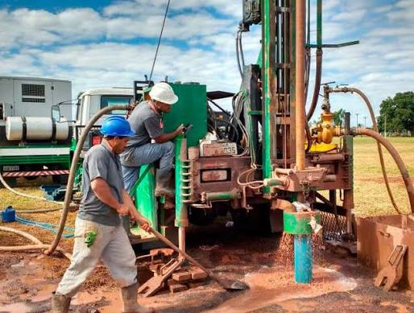
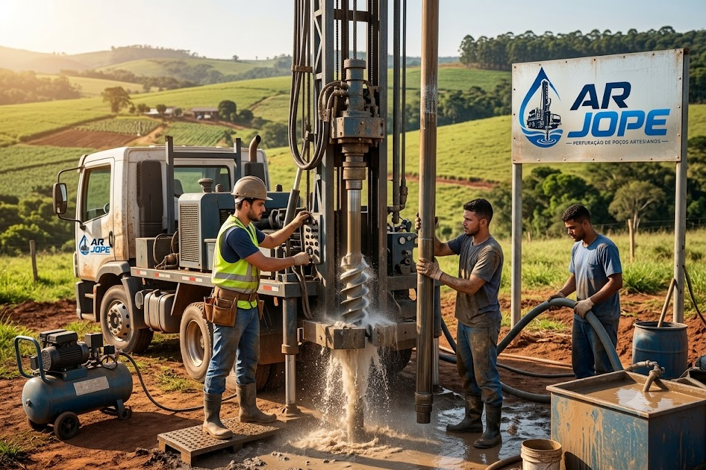
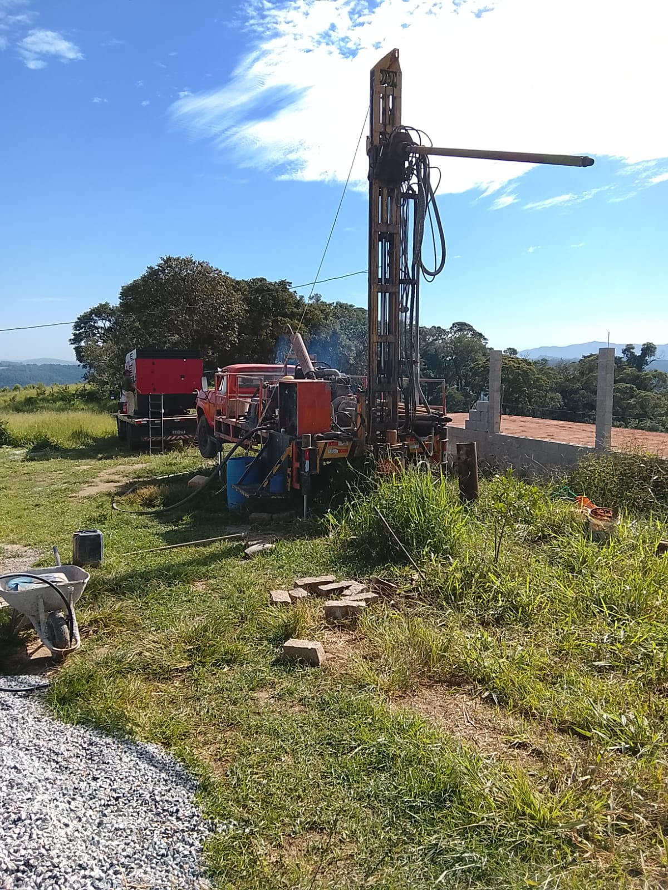
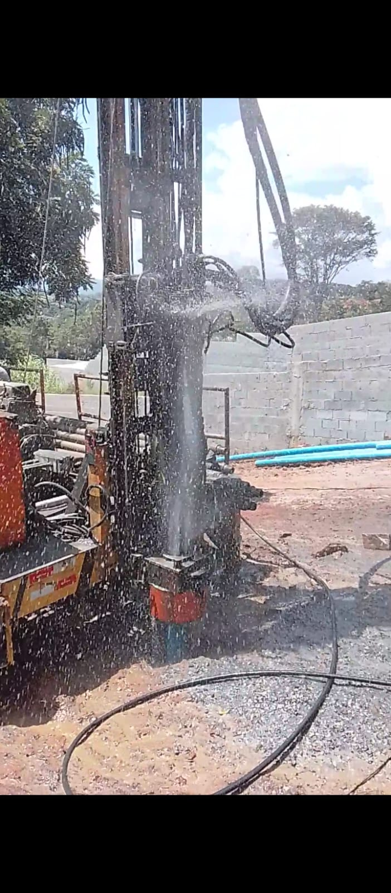
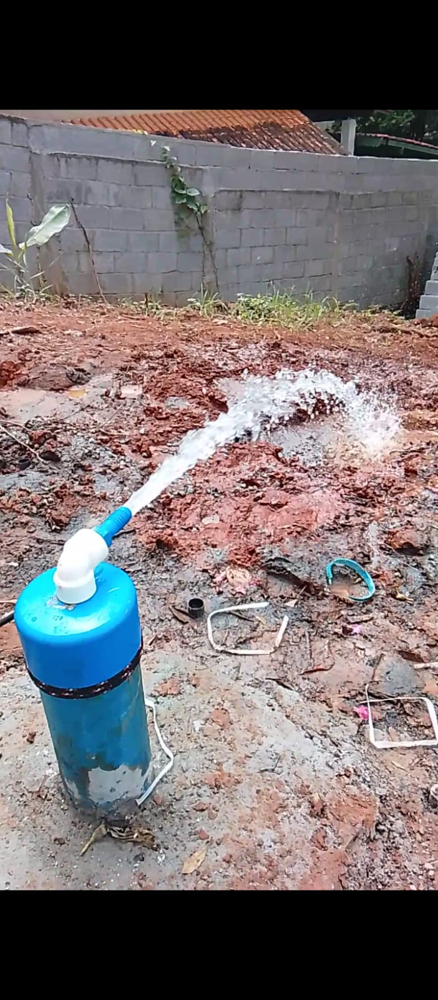

Perfuração de Poços Artesianos e Semiartesianos
Perfuração para residências, chácaras, sítios, condomínios, empresas e propriedades rurais, utilizando equipamentos modernos e mão de obra especializada.
Atendemos residências, propriedades rurais, empresas e indústrias, oferecendo perfuração de poços artesianos com equipamentos modernos, e compromisso com a qualidade.

Anos de Experiência
Poços Perfurados
Clientes Satisfeitos
Cidades Atendidas
Base de Atendimento

A AR JOPE é especializada na perfuração de poços artesianos e semiartesianos para residências, propriedades rurais, empresas e indústrias, oferecendo soluções completas para abastecimento de água.
Trabalhamos com equipamentos modernos, profissionais qualificados e foco total na qualidade, segurança e satisfação dos nossos clientes, atendendo a cidade de Atibaia e toda a região Bragantina.
Atendemos Atibaia e toda a região Bragantina com soluções completas para o abastecimento de água.
Perfuração para residências, chácaras, sítios, condomínios, empresas e propriedades rurais, utilizando equipamentos modernos e mão de obra especializada.
Manutenção preventiva e corretiva para manter o funcionamento do poço com segurança, eficiência e maior durabilidade.
Comercialização de bombas submersas e equipamentos para sistemas de bombeamento, com orientação para a escolha do modelo ideal.
Trabalhamos de forma organizada para entregar segurança, qualidade e rapidez em cada serviço.
Entre em contato pelo WhatsApp e informe sua necessidade.
Avaliamos o local e indicamos a melhor solução para seu projeto.
Realizamos o serviço utilizando equipamentos modernos e equipe especializada.
Finalizamos o serviço garantindo qualidade e satisfação do cliente.
Trabalhamos com foco na satisfação dos clientes, oferecendo soluções eficientes e atendimento de qualidade.
Serviços realizados com equipamentos modernos e profissionais capacitados.
Compromisso com prazos e organização durante toda a execução.
Procedimentos executados com responsabilidade e seguindo boas práticas.
Atendemos Atibaia e toda a região Bragantina com soluções completas.
Nosso compromisso é oferecer um atendimento de qualidade em cada serviço realizado. Se você já foi nosso cliente, gostaríamos de saber como foi sua experiência.
Enviar meu depoimentoCada projeto é executado com equipamentos modernos, responsabilidade e compromisso com a qualidade.



Conte com a experiência da AR JOPE para perfuração de poços artesianos, manutenção de poços e venda de bombas. Atendemos Atibaia e toda a Região Bragantina com qualidade, segurança e compromisso.